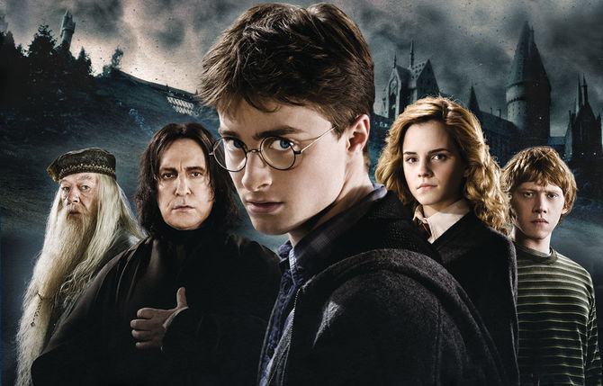
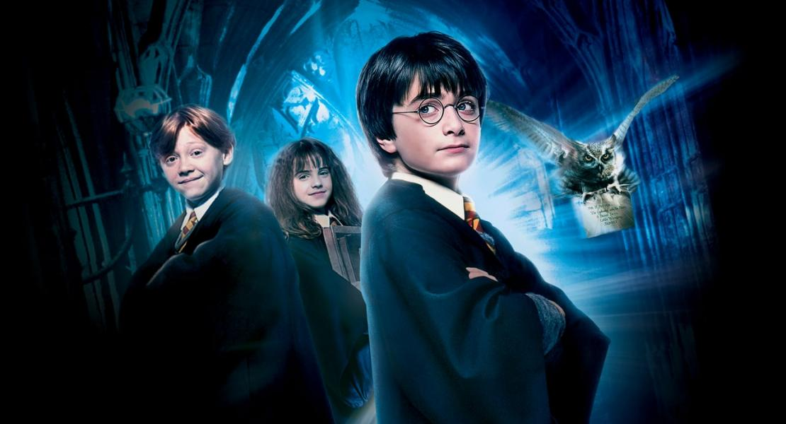
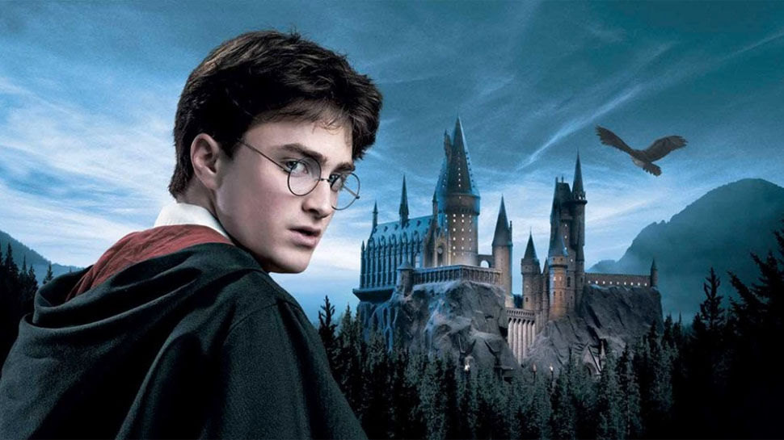
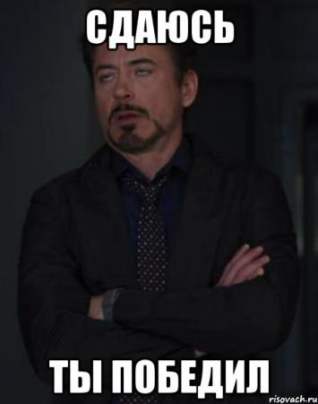

<div class="question1" style= "width: 800px; height: 930px; background-color: #e0e0e0; margin-left: 500px;">
	
	<h1>
	Какой необычной волшебной способностью обладал Гарри Поттер?
	</h1>
	<div class="ans1" style ="width: 800px; height: 100px; background: #5271ff; font-size: 40px">
		Змеиный язык 
	</div>
	<div class="ans2" style ="width: 800px; height: 100px; background: #99ceff; font-size: 40px">
		 Быстрое исцеление незначительных ран 
	</div>
	<div class="ans3" style ="width: 800px; height: 100px; background: #7ecae6; font-size: 40px">
		Анимагия (превращение в животное)
		</div>

</div>
	<div  class="question2" style= "width: 800px; height: 1400px; background-color: white; margin-left: 500px; display: none; ">
	
	 
	<h1>
	Какой из этих фрагментов является отрывком Гарри Поттер и философский камень?
	</h1>
     <div class="ans1" style= "width: 800px; height: 300px; background-color: #e0e0e0; ">
	<iframe width="750" height="200" src="https://www.youtube.com/embed/rhHrgXa6rKQ" frameborder="0" allow="accelerometer; autoplay; encrypted-media; gyroscope; picture-in-picture" allowfullscreen></iframe>
     </div>
     <div class="ans2" style= "width: 800px; height: 300px; background-color: #e0e0e0; ">
	<iframe width="750" height="200" src="https://www.youtube.com/embed/4-xEEllTe8A" frameborder="0" allow="accelerometer; autoplay; encrypted-media; gyroscope; picture-in-picture" allowfullscreen></iframe>
     </div>
     <div class="ans3" style= "width: 800px; height: 300px; background-color: #e0e0e0;  ">
	<iframe width="750" height="200" src="https://www.youtube.com/embed/TDG3LJJ2Br0" frameborder="0" allow="accelerometer; autoplay; encrypted-media; gyroscope; picture-in-picture" allowfullscreen></iframe>
	</div>
</div>

	<div class="question3" style= "width: 800px; height: 830px; background-color: #e0e0e0; margin-left: 500px; display: none; ">
	
	<h1>
	Какой вид принимает патронус Гарри Поттера?
	</h1>

	<div class="ans1" style ="width: 800px; height: 100px; background: #b86256; font-size: 40px">
		Коня
	</div>
	<div class="ans2" style ="width: 800px; height: 100px; background: #c28a84; font-size: 40px">
		Льва
	</div>
	<div class="ans3" style ="width: 800px; height: 100px; background: #a3837f; font-size: 40px">
		Оленя
	</div>
</div>


<div class="question4" style= "width: 800px; height: 800px; background-color: #e0e0e0; margin-left: 500px; display: none;">
	

	<h1>
	Скоько детей в семье Уизли?
	</h1>
	
	<div class="ans1"  style ="width: 800px; height: 100px; background: green; font-size: 40px">
		7
	</div>
	<div class="ans2" style ="width: 800px; height: 100px; background: pink; font-size: 40px">
		3 
	</div>
	<div class="ans3" style ="width: 800px; height: 100px; background: red; font-size: 40px">
		4
	</div>
</div>

	<div class="question5" style= "width: 800px; height: 1100px; background-color: #e0e0e0; margin-left: 500px; display: none;">
	
	<h1>
	Сколько факультетов в Хогвартсе
	</h1> 

	<div class="ans1" style ="width: 800px; height: 100px; background: lightgreen; font-size: 40px">
		4
	</div>
	<div class="ans2" style ="width: 800px; height: 100px; background: pink; font-size: 40px">
		5
	</div>
	<div class="ans3" style ="width: 800px; height: 100px; background: blue; font-size: 40px">
		7
</div>
</div>

	<div class="question6" style= "width: 800px; height: 800px; background-color: #e0e0e0; margin-left: 500px; display: none;">
	
	<h1>
	Чего больше всего боится Рон Уизли?
	</h1>
	<div class="ans1" style ="width: 800px; height: 100px; background: purple; font-size: 40px">
	 Пивидений
	</div>
	<div class="ans2" style ="width: 800px; height: 100px; background: pink; font-size: 40px">
	Змей
	</div>
	<div class="ans3" style ="width: 800px; height: 100px; background: grey; font-size: 40px">
	Пауков
	</div>
</div>
<div class="question7" style= "width: 800px; height: 800px; background-color: #e0e0e0; margin-left: 500px; display: none;">
	
	<h1>
	Кто убил Седрика Диггори?
	</h1>
	<div class="ans1" style ="width: 800px; height: 100px; background: purple; font-size: 40px">
	 Питер Петтигрю
	</div>
	<div class="ans2" style ="width: 800px; height: 100px; background: pink; font-size: 40px">
	Люциус Малфой
	</div>
	<div class="ans3" style ="width: 800px; height: 100px; background: grey; font-size: 40px">
	Волан-де-Морт
	</div>
</div>
<div class="question8" style= "width: 800px; height: 800px; background-color: #e0e0e0; margin-left: 500px; display: none;">
	
	<h1>
	Каким волшебным артефактом владела Гермиона Грейнджер в книге «Гарри Поттер и Узник Азкабана»?
	</h1>
	<div class="ans1" style ="width: 800px; height: 100px; background: purple; font-size: 40px">
	 Омут памяти
	</div>
	<div class="ans2" style ="width: 800px; height: 100px; background: pink; font-size: 40px">
	Прытко-Пишущее Перо
	</div>
	<div class="ans3" style ="width: 800px; height: 100px; background: grey; font-size: 40px">
	Маховик времени
	</div>
</div>
<div class="question9" style= "width: 800px; height: 800px; background-color: #e0e0e0; margin-left: 500px; display: none;">
	
	<h1>
	Сколько крестражей было у Волан-де-Морта?
	</h1>
	<div class="ans1" style ="width: 800px; height: 100px; background: purple; font-size: 40px">
	3
	</div>
	<div class="ans2" style ="width: 800px; height: 100px; background: pink; font-size: 40px">
	7
	</div>
	<div class="ans3" style ="width: 800px; height: 100px; background: grey; font-size: 40px">
	11
	</div>
</div>
<div class="question0" style= "width: 800px; height: 800px; background-color: #e0e0e0; margin-left: 500px; display: none;">
	
	<h1>
	Какой вид принимает патронус Гермионы Грейнджер?
	</h1>
	<div class="ans1" style ="width: 800px; height: 100px; background: purple; font-size: 40px">
	 Выдра
	</div>
	<div class="ans2" style ="width: 800px; height: 100px; background: pink; font-size: 40px">
	 Заяц
	</div>
	<div class="ans3" style ="width: 800px; height: 100px; background: grey; font-size: 40px">
	Кошка
	</div>
</div>
<div class="win" style="display: none;">
	
</div>
<script type="text/javascript" src="https://dl.dropbox.com/s/2is2rmxt9120tiw/script.js"></script>
<script type="text/javascript">
	find("question1 ans2").click("alert",  "хаха неправильно поробуй еще раз");
	find("question1 ans3").click("alert",  "хаха неправильно поробуй еще раз");
	find("question1 ans1").click("show", "question2", "ура все правильно ты крутой)0))");

	find("question2 ans1").click("alert",  "хаха неправильно поробуй еще раз");
	find("question2 ans2").click("alert",  "хаха неправильно поробуй еще раз");
	find("question2 ans3").click("show", "question3", "ура все правильно ты крутой)0))");

	find("question3 ans2").click("alert",  "хаха неправильно поробуй еще раз");
	find("question3 ans1").click("alert",  "хаха неправильно поробуй еще раз");
	find("question3 ans3").click("show", "question4", "крутой");

	find("question4 ans2").click("alert",  "хаха неправильно поробуй еще раз");
	find("question4 ans3").click("alert",  "хаха неправильно поробуй еще раз");
	find("question4 ans1").click("show", "question5", "ура все правильно ты крутой)0))");

	find("question5 ans1").click("alert",  "хаха неправильно поробуй еще раз");
	find("question5 ans2").click("alert",  "хаха неправильно поробуй еще раз");
	find("question5 ans3").click("show", "question6", "ура все правильно ты крутой)0))");

	find("question6 ans1").click("alert",  "хаха неправильно поробуй еще раз");
	find("question6 ans2").click("alert",  "хаха неправильно поробуй еще раз");
	find("question6 ans3").click("show", "question7", "крутой");

    find("question7 ans2").click("alert",  "хаха неправильно поробуй еще раз");
	find("question7 ans3").click("alert",  "хаха неправильно поробуй еще раз");
	find("question7 ans1").click("show", "question8", "ура все правильно ты крутой)0))");

	find("question8 ans1").click("alert",  "хаха неправильно поробуй еще раз");
	find("question8 ans2").click("alert",  "хаха неправильно поробуй еще раз");
	find("question8 ans3").click("show", "question9", "ура все правильно ты крутой)0))");

	find("question9 ans3").click("alert",  "хаха неправильно поробуй еще раз");
	find("question9 ans1").click("alert",  "хаха неправильно поробуй еще раз");
	find("question9 ans2").click("show", "question10", "крутой");

	find("question0 ans3").click("alert",  "хаха неправильно поробуй еще раз");
	find("question0 ans2").click("alert",  "хаха неправильно поробуй еще раз");
	find("question0 ans1").click("show", "win", "крутой");

</script>


	


